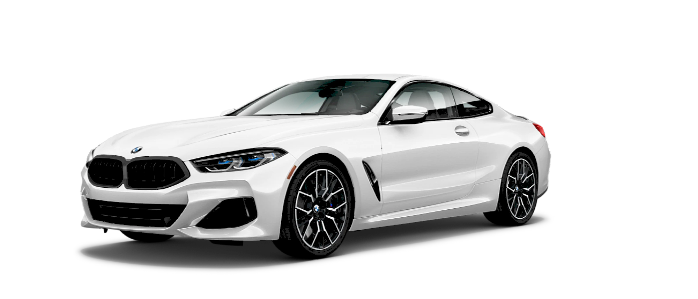
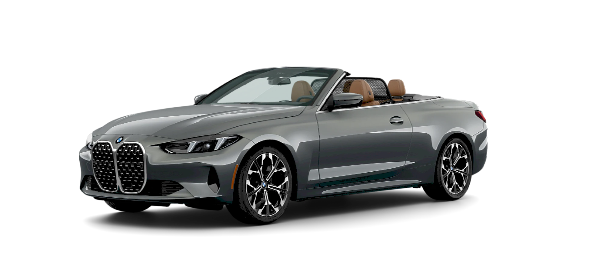
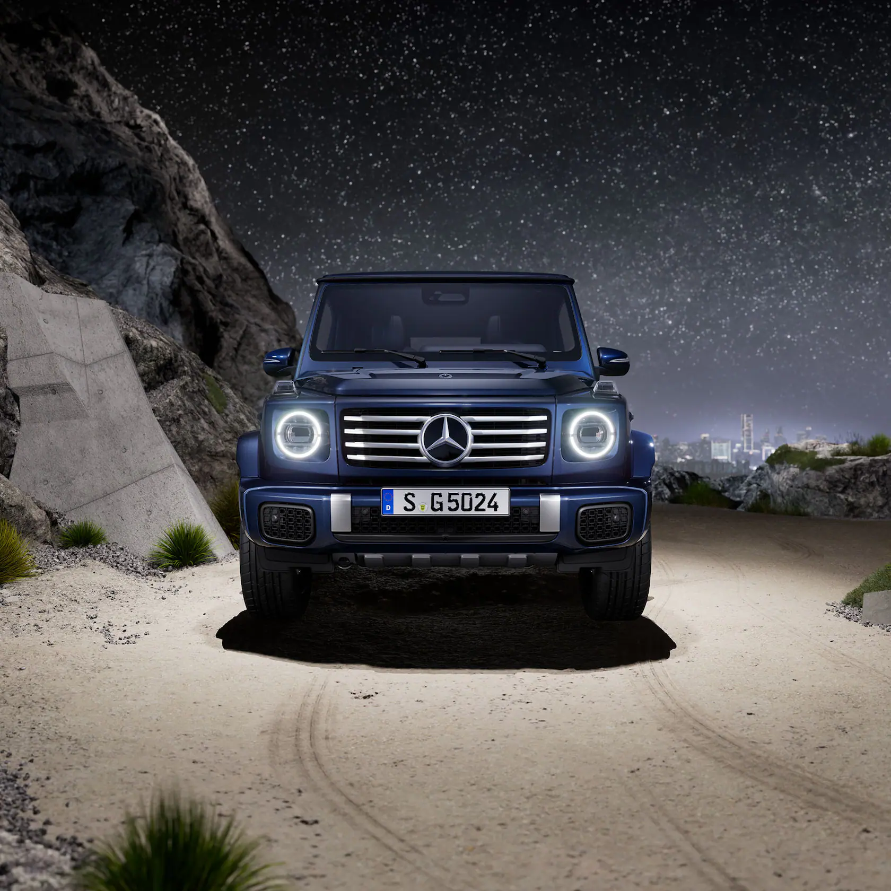
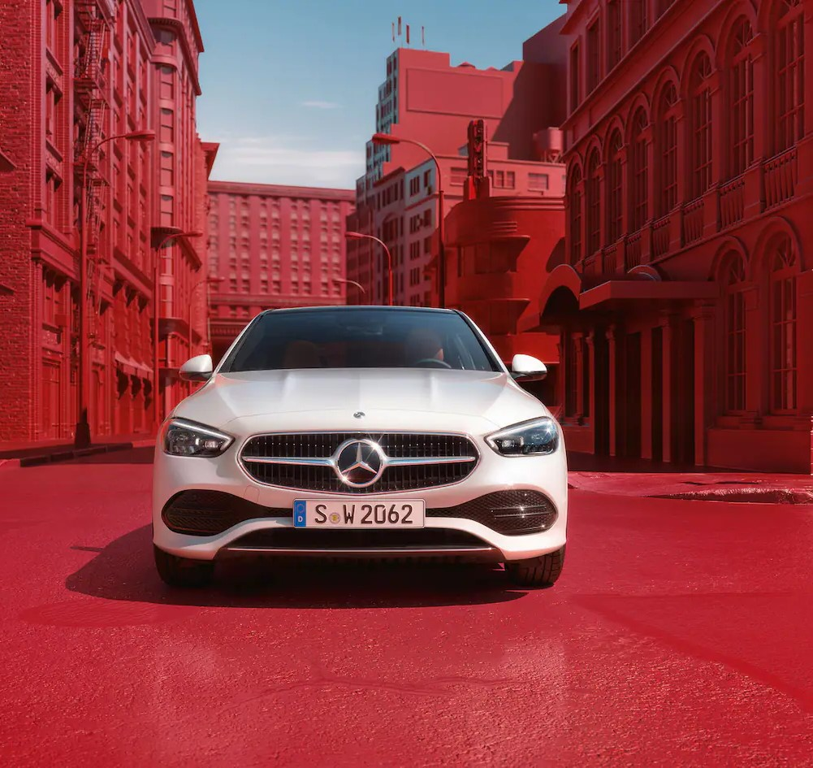
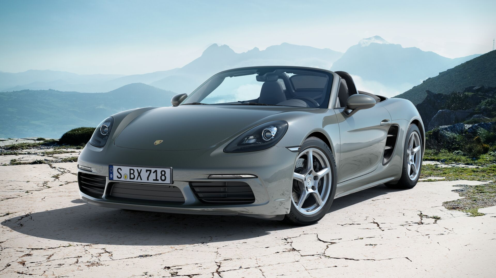
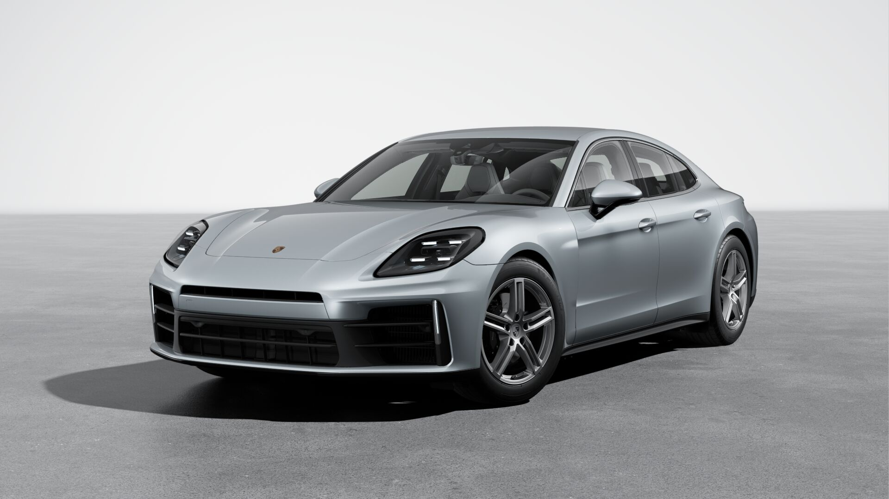
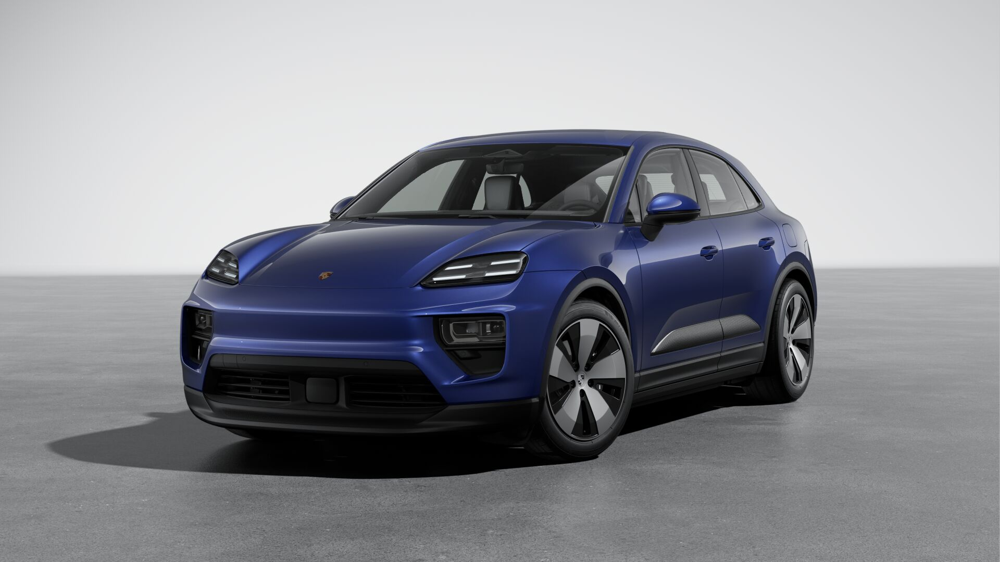

BMW 8 Series Gran Coupe
بیامو 8 سری گرن کوپه یک سدان چهاردرب لوکس و اسپرت است که عملکرد بالا را با طراحی ظریف و فضای کابین جادار ادغام کرده است. این خودرو با فناوریهای پیشرفته، موتورهای قدرتمند و جزئیات لوکس، تجربهای بینظیر برای رانندگی روزمره و سفرهای طولانی فراهم میکند.

BMW 8 Series Coupe
بیامو 8 سری کوپه یک گرندتورر اسپرت و باوقار است که تمرکز آن بر راندمان بالا و طراحی دینامیک است. این مدل با پیشرانههای قدرتمند، شتاب چشمگیر و امکانات لوکس، حس واقعی رانندگی اسپرت را در کنار راحتی ممتاز ارائه میدهد.

BMW 4 Series Convertible br
بیامو 4 سری کانورتیبل یک خودروی کروکی اسپرت و لوکس است که تجربه رانندگی در فضای باز را با طراحی جذاب و فناوریهای پیشرفته ترکیب میکند. این مدل با موتورهای قدرتمند، سیستم تعلیق دقیق و امکانات رفاهی کامل، حس آزادی و لذت رانندگی را به اوج میرساند.

Mercedes-Benz C-Class
مرسدس بنز C-Class یک سدان لوکس و جمعوجور است که ترکیبی از طراحی ظریف، رانندگی نرم و تکنولوژی پیشرفته را ارائه میدهد. این خودرو با کابین باکیفیت، ایمنی بالا و گزینههای متنوع موتور، انتخاب محبوبی در میان علاقهمندان برند مرسدس بنز است.

Mercedes-Benz G-Class
مرسدس بنز G-Class یا همان "جیواگن" یک شاسیبلند آفرود افسانهای با طراحی ماندگار و تواناییهای بینظیر در مسیرهای سخت است. این خودرو با حفظ ظاهر کلاسیک خود، به جدیدترین فناوریها و امکانات لوکس مجهز شده تا هم برای ماجراجویی و هم برای رانندگی شهری مناسب باشد.

Mercedes-Benz C-Class
مرسدس بنز C-Class یک سدان لوکس و جمعوجور است که ترکیبی از طراحی ظریف، رانندگی نرم و تکنولوژی پیشرفته را ارائه میدهد. این خودرو با کابین باکیفیت، ایمنی بالا و گزینههای متنوع موتور، انتخاب محبوبی در میان علاقهمندان برند مرسدس بنز است.

Porsche 718 Boxster
پورشه 718 باکستر یک رودستر دو نفره با طراحی اسپرت و موتور میانی است که تجربه رانندگی پویا و هیجانانگیز را ارائه میدهد. این خودرو با فرمانپذیری دقیق، شتابگیری سریع و کیفیت ساخت بالا، انتخابی ایدهآل برای عاشقان سرعت و لوکسسواری است.

Porsche Panamera
پورشه پانامرا ترکیبی از راحتی یک سدان لوکس و عملکرد یک خودروی اسپرت است. با موتورهای قدرتمند، فضای داخلی لوکس و تکنولوژیهای روز دنیا، این خودرو تجربهای کمنظیر از رانندگی را برای سرنشینان فراهم میکند.

Porsche Macan
پورشه ماکان هیبریدی یک کراساوور لوکس و جمعوجور است که با ترکیب فناوری هیبریدی و تواناییهای دینامیکی پورشه، رانندگی کممصرف و در عین حال پرقدرت را ارائه میدهد. طراحی شیک و امکانات پیشرفته، آن را به گزینهای جذاب در بازار خودروهای لوکس تبدیل کرده است.